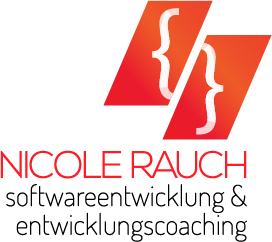

Im Rahmen der agilen Softwareentwicklung biete ich Ihnen meine Unterstützung an. Meine Schwerpunkte liegen in folgenden Bereichen:
Ich berate Sie gern, wenn es darum geht, die für Sie geeigneten Techniken und Tools zu finden. Beim Einsatz der von Ihnen gewählten Technik begleite ich Sie mittels Einführungsworkshops und weitergehender Schulungen, orientiert an Ihren Bedürfnissen.
Außerdem kann ich Ihr Team auch durch integriertes technisches Coaching und durch direkte Mitarbeit bei der Umsetzung unterstützen.